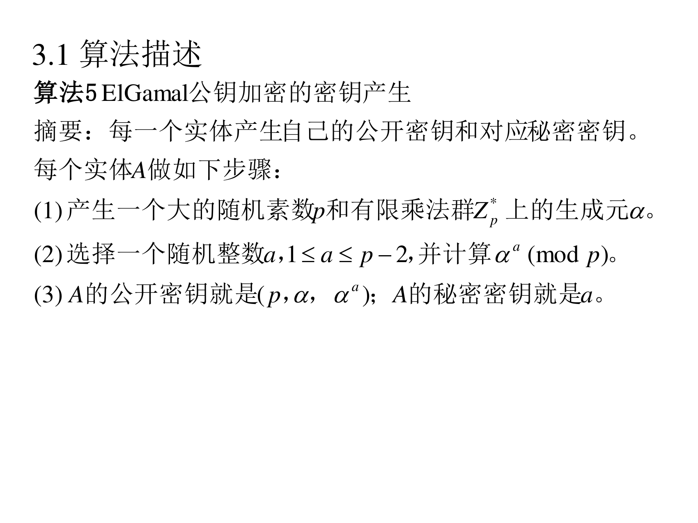
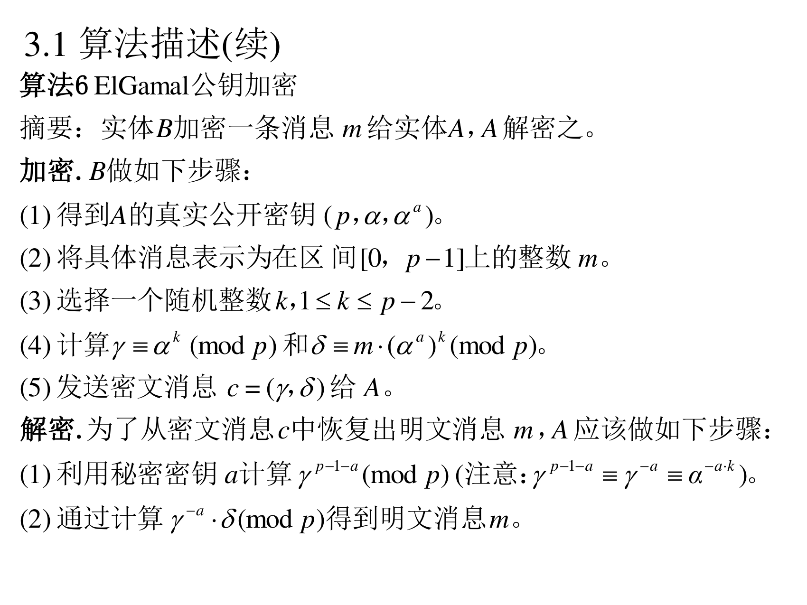
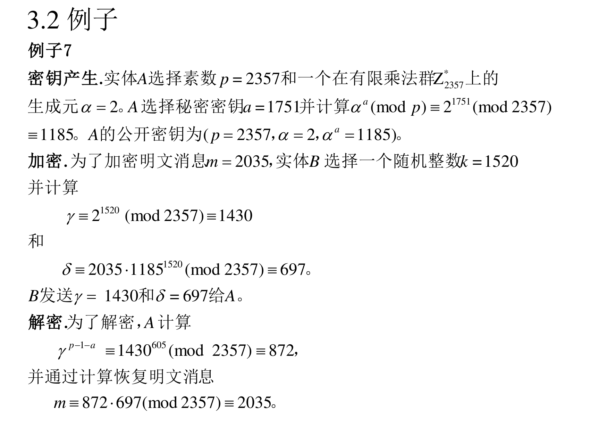
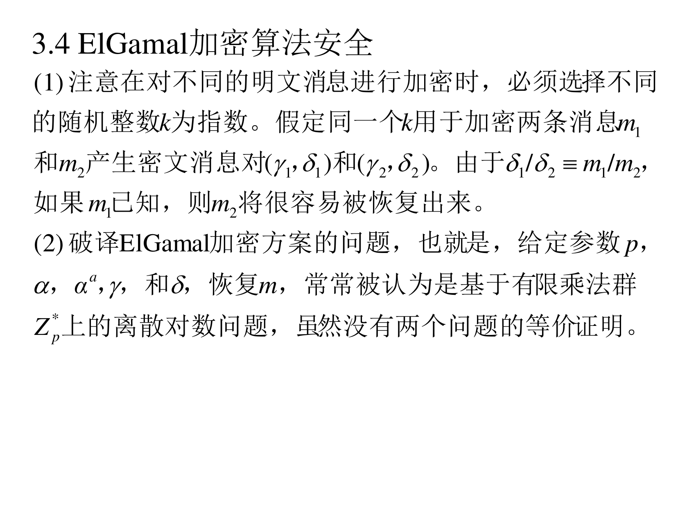
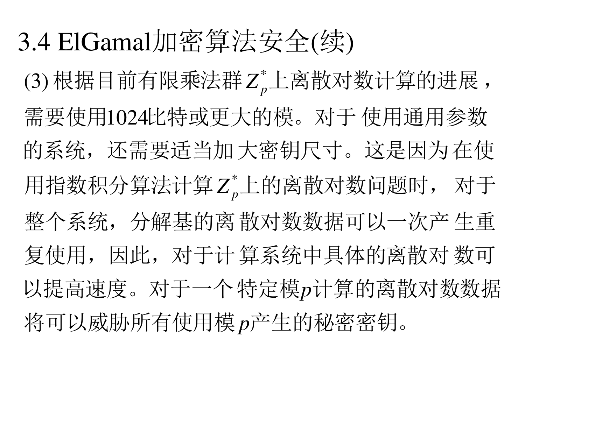

6.3 ElGamal 公钥加密算法
前面四节都在讲"怎么攻"，现在开始"怎么用"。
（PPT 第 29 页）
ElGamal 公钥加密方案依赖于离散对数问题和 Diffie-Hellman 问题的困难性。基本的 ElGamal 公钥加密方案是 ElGamal 于 1985 年提出。
补Diffie-Hellman 问题是什么：给定 αa 和 αb（a,b 保密），求 αab。它和 DLP 密切相关——如果会算离散对数就知道 a，自然也就会算 αab。ElGamal 加密的安全性同时依赖这两个问题。
6.3.1 算法描述
6.3.1.1 算法 5：密钥产生
（PPT 第 30 页）

算法 5（ElGamal 公钥加密的密钥产生）
摘要：每一个实体产生自己的公开密钥和对应秘密密钥。每个实体 A 做如下步骤：
(1) 产生一个大的随机素数 p 和有限乘法群 Zp∗ 上的生成元 α。
(2) 选择一个随机整数 a，1≤a≤p−2，并计算 αa(modp)。
(3) A 的公开密钥就是 (p,α,αa)；A 的秘密密钥就是 a。
翻译成人话：和 Diffie-Hellman 一模一样的第一步——随机挑一个私钥 a，算出"我在模 p 世界里的公开身份"αa 公布出去。别人知道 αa，但由 αa 反推 a 就是离散对数问题（难）。
6.3.1.2 算法 6：加密与解密
（PPT 第 31–32 页）

算法 6（ElGamal 公钥加密）
摘要：实体 B 加密一条消息 m 给实体 A，A 解密之。
加密. B 做如下步骤：
(1) 得到 A 的真实公开密钥 (p,α,αa)。
(2) 将具体消息表示为在区间 [0,p−1] 上的整数 m。
(3) 选择一个随机整数 k，1≤k≤p−2。
(4) 计算 γ≡αk(modp) 和 δ≡m⋅(αa)k(modp)。
(5) 发送密文消息 c=(γ,δ) 给 A。
解密. 为了从密文消息 c 中恢复出明文消息 m，A 应该做如下步骤：
(1) 利用秘密密钥 a 计算 γp−1−a(modp)（注意：γp−1−a≡γ−a）。
(2) 通过计算 γ−a⋅δ(modp) 得到明文消息 m。
翻译成人话（关键在"两次掩码要约掉"）：
- B 每次加密时临时选一个随机数 k，用它造一个"一次性的会话钥匙" αk（即 γ）；
- 真正的遮蔽是 δ=m⋅(αa)k：那个 (αa)k 就是"掩码"，A 用私钥 a 能算出来（(αk)a=(αa)k），别人算不出来（这需要求解 DH 问题）；
- A 解密时用 γ−a 乘 δ：γ−a⋅δ=α−ak⋅m⋅αak=m。
"为什么用 γp−1−a 而不是 γ−a"：因为模幂里没有"负指数"这种直接运算，而由费马小定理 γp−1≡1，所以 γp−1−a≡γ−a。这是所有实现里都这么写的原因。
6.3.1.3 正确性证明
（PPT 第 32 页）
解密正确性证明. 算法 6 的解密过程将可以恢复出原始的明文消息，这是因为
γ−a⋅δ≡α−ak⋅m⋅αak≡m(modp)
评述. 所有的实体可以考虑使用相同的素数 p 和生成元 α，这种情况下 p 和 α 可以不再被看作每个实体的公开密钥。这将可以缩减公开密钥的尺寸。而使用系统内通用参数 p 和 α 的一个不利之处在于 p 通常需要选择更大的数值。
翻译成人话：这个评述和 6.2.5.3 节的评述 (1) 是一回事：共用参数方便，但一旦有人攻破了这个模 p（把分解基的离散对数算出来了），全系统都完了。所以如果共用，p 必须更大、更保守。
6.3.2 例子 7
（PPT 第 33 页）

例子 7
密钥产生. 实体 A 选择素数 p=2357 和一个在有限乘法群 Z2357∗ 上的生成元 α=2。A 选择秘密密钥 a=1751 并计算 αa(modp)=21751(mod2357)=1185。A 的公开密钥为 (p=2357, α=2, αa=1185)。
加密. 为了加密明文消息 m=2035，实体 B 选择一个随机整数 k=1520 并计算
γ≡21520(mod2357)=1430
和
δ≡2035⋅11851520(mod2357)=697
B 发送 γ=1430 和 δ=697 给 A。
解密. 为了解密，A 计算
γp−1−a=1430605(mod2357)=872
并通过计算恢复明文消息
m≡872⋅697(mod2357)≡2035
核对一遍（本讲义验算过）：
- 21751mod2357=1185 ✔
- 21520mod2357=1430 ✔
- 2035×11851520mod2357=697 ✔
- p−1−a=2357−1−1751=605；1430605mod2357=872 ✔（这正好是 γ−a）
- 872×697=607784；607784−257×2357=607784−605749=2035 ✔ 恢复成功
6.3.3 ElGamal 加密算法效率
（PPT 第 34 页）
(1) 加密过程需要两次模幂计算，也就是 αk(modp) 和 (αa)k(modp)。这两个模幂计算可以通过在随机选择指数 k 的过程中附加适当性质，如低 Hamming 重量，来提高处理速度。但是，指数也必须足够大而随机以抵抗通过小步大步算法对指数的搜索攻击。
(2) ElGamal 加密的一个不利之处在于明文消息的扩展因子为 2。也就是，密文消息的长度为对应明文消息的 2 倍。
翻译成人话：
- (1) 性能上的取舍：让 k 的二进制表示里"1 少一点"（低 Hamming 重量），模幂就快（因为快速幂的乘法次数正比于 1 的个数）。但这会让 k 的搜索空间变小，攻击者可以用小步大步算法找 k——所以要小心，k 仍然要足够随机。
- (2) 密文膨胀：明文 m 是一个模 p 的数，密文 (γ,δ) 是两个模 p 的数。传输量翻倍。
6.3.4 ElGamal 加密算法安全
（PPT 第 35–36 页）

(1) 注意在对不同的明文消息进行加密时，必须选择不同的随机整数 k 为指数。假定同一个 k 用于加密两条消息 m1 和 m2 产生密文消息对 (γ,δ1) 和 (γ,δ2)。由于 δ1/δ2≡m1/m2，如果 m1 已知，则 m2 将很容易被恢复出来。
(2) 破译 ElGamal 加密方案的问题，也就是，给定参数 p，α，αa，γ，和 δ，恢复 m，常常被认为是基于有限乘法群 Zp∗ 上的离散对数问题，虽然没有两个问题的等价证明。
(3) 根据目前有限乘法群 Zp∗ 上离散对数计算的进展，需要使用 1024 比特或更大的模。对于使用通用参数的系统，还需要适当加大密钥尺寸。这是因为在使用指数积分算法计算 Zp∗ 上的离散对数问题时，对于整个系统，分解基的离散对数数据可以一次产生重复使用，因此，对于计算系统中具体的离散对数可以提高速度。对于一个特定模 p 计算的离散对数数据将可以威胁所有使用模 p 产生的秘密密钥。

翻译成人话：
- (1) 这是 ElGamal 最著名的实践事故：k 复用等于把两条消息的比值 δ1/δ2=m1/m2 白送给攻击者。历史上 PlayStation 3 的签名就被这个错误攻破过（同一个随机数签了两条消息）。记住：k 必须每次重新随机生成。
- (3) 和 6.2.5.3、6.3.1.3 的结论串起来：指数积分算法对同一个 p 算出的"分解基对数表"可以重复利用，所以共用参数的系统比"独立参数"更脆弱，必须用更大的 p。